RADIO
Specifications
Dimensions: 1 DIN box with 2 DIN front panel.
Modules included:
- Radio
- Audio CD player + CD ROM with MP3
- LCD graphic display
- External CD Changer system (if present).
- Connection with Bluetooth control unit for reproduction of musical files (MP3).
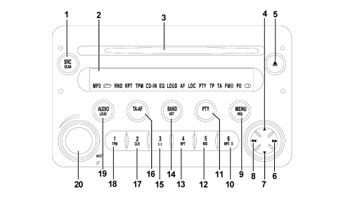
The diagram below shows examples of the display for various CD with MP3 radio functions:
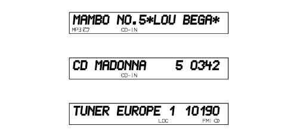
Technical specifications
The technical specifications are listed below:
GENERAL SPECIFICATIONS:
- music audio power: 4x35W
- 5 band graphic equalizer
- easy to manage menu for the adjustment of the radio settings and any external interfaces (CD-Changer)
- remote control from the steering wheel
- possibility of interface with outside CD Changer
- volume control according to the speed (via CAN)
- possibility of activating certain commands via voice recognition module.
RADIO SPECIFICATIONS:
- RDS
- RDS - TMC (Traffic Message Channel)
- EON (Enhanced Other Network)
- TA (Traffic Announcements)
- band tuning: USW (FM); MW; LW
- possibility of programming:
- 24 FM stations (6 of which can be memorized through autostore on the AMST band);
- 6 MW stations;
- 6 LW stations;
- 6 stations that can be memorized through autostore on the AMST band
- 2 scan modes (short lislten to a station and automatic transfer to the next):
- scanning the frequency band used;
- scanning programmed stations.
- possibility of selecting programmes via PTY (on FM bands only).
- local/distant setting.
AUDIO SPECIFICATIONS:
- bass
- balance
- fader
- loudness
- treble
- hi-fi system active control
- 5 equalizing curves:
- best (manufacturer''s equalizing data);
- rock;
- jazz;
- classical;
- manual (can be set via 5 band graphic equalizer)
- soft mute.
CD SPECIFICATIONS:
- motorized loading and ejection
- TPM function (Track Program Memory)
- shuffle function
- repeat
- skip
- pause / stop
- compression: activates the dynamic compression circuit
- CD naming: CD identification (20 max)
CD MP3 SPECIFICATIONS:
- play list function (such as TPM for audio CD)
- functions associated with the play list:
- scan;
- repeat (one track or all);
- pause;
- skip
- maximum number of MP3 tracks considered for each CD: 999 (if the number of MP3 files contained in the CD ROM is higher than this limit, only the first 999 will be considered).
- compression: activates the CD noise dynamic reduction circuit.
Blaupunkt 10 disc CD changer specifications (in the luggage compartment):
- scan function
- repeat function
- shuffle function
- CD naming
- compression: activates the dynamic reduction circuit.
Operation
The table below contains all the functions that can be activated; (a) = short press (less than 2 secs.), (b) = long press (more than 2 secs.).
|
Key |
Symbol |
RADIO mode |
CD/MP3 mode |
CD Changer mode |
|
1 |
SRC-SCAN |
(a) CD, CD Changer (if connected) or Radio selection (b) Scan of FM/AM radio stations |
(a) CD, CD Changer (if connected) selection (b) Scan of tracks on CD |
(a) CD, CD Changer selection (if connected) or Radio (b) Scan of CDs in CD Changer |
|
2 |
Display |
|||
|
3 |
(compartment CD) |
|||
|
4 |
"up" |
Automatic station search TP: search + PTY: search + AF: search + |
(a) Selection of next CD (b) Selection of next CD continuously |
|
|
5 |
“eject” |
Eject CD |
Eject CD |
Eject CD |
|
6 |
"ffw" |
Manual station search TP: search + PTY: search + AF: search + |
(a) Selection of next track (b) Track fast forward |
|
|
7 |
"down" |
Automatic station search TP: search - PTY: search - AF: search - |
(a) Selection of previous CD (b) Selection of next CD |
|
|
8 |
"rw" |
Manual station search TP: search - PTY: search - AF: search - |
(a) Return to beginning of track/selection of previous track (b) Track fast rewind |
(a) Return to beginning of track/ select previous track (b) Track fast rewind |
|
9 |
MENU-PRS |
(a) Menu activation/deactivation (b) Preset station scan |
(a) Menu activation/deactivation |
(a) Activation/deactivation Menu |
|
10 |
6-MP3 |
FM/AM: station recall preselection 6 |
(a) Display data selected |
|
|
11 |
PTY |
(a) PTY ON/OFF (b) PTY: display programme type selected |
(a) PTY ON/OFF |
(a) PTY ON/OFF |
|
12 |
5-MIX |
(a) FM/AM: station recall preselection 5 (b) FM/AM: programme station preselection 5 |
(a) Activation/deactivation MIX function |
(a) Activation/deactivation MIX function |
|
13 |
4-RPT |
(a) FM/AM: station recall preselection 4 (b) FM/AM: programme station preselection 4 |
(a) Activation/deactivation REPEAT function |
(a) Activation/deactivation REPEAT function |
|
14 |
BAND-AST |
(a) FM1, FM2, FMT, MW, LW (b) Automatic programming in the FMT station group |
(b) Automatic programming in the FMT station group |
(b) Automatic programming in the FMT station group |
|
15 |
3-II |
(a) FM/AM: station recall preselection 3 (b) FM/AM: programme station preselection 3 |
(a) Activation/deactivation of pause CD reproduction |
(a) Activation/deactivation CD reproduction pause |
|
16 |
TA-AF |
(a) TA ON/OFF (b) AF ON/OFF |
(a) TA ON/OFF (b) AF ON/OFF |
(a) TA ON/OFF (b) AF ON/OFF |
|
17 |
2-CLR |
(a) FM/AM: station recall preselection 2 (b) FM/AM: programme station preselection 2 |
(b) Cancel programming tracks on CD selected |
|
|
18 |
1-TPM |
(a) FM/AM: station recall preselection 1 (b) FM/AM: programme station preselection 1 |
(a) Activation/deactivation TPM function (b) Track programming desired |
|
|
19 |
AUDIO-LOUD |
(a) Bass (B) Treble (T) Fader (F) Balance (B) (b) Activation/deactivation Loudness |
(a) Bass (B) Treble (T) Fader (F) Balance (B) (b) Activation/deactivation Loudness |
(a) Bass (B) Treble (T) Fader (F) Balance (B) (b) Activation/deactivation Loudness |
|
20 |
on/off “MUTE” |
(a) With radio on: activation/deactivation Audio Mute With radio off: radio on Volume adjustment: turn to the left: decrease turn to the right: increase (b) With radio on: switch off With radio on: switch on |
Anti-theft code
The radio is installed in production and is connected to the CAN in order to establish communication with the Body Computer memorizing an anti-theft code known as an Exchanger Code.
At each subsequent Key On (and even if the battery is disconnected), an automatic authentication procedure is repeated: the words "CAN CHECK" appear in the radio display: if the Exchange Code check is positive, the system begins to operate. If the codes compared are not the same, a message appears on the display asking the user to enter a manual code (Master Code - 4-figure code from 1111 to 6666) that is shown on the radio code card.

|
The Master Code is pre-programmed in production and is different for each radio and is also not the same as the Exchanger Code. |

|
The manual procedure for entering the Master Code is only necessary if: replacing the Body Computer for a radio already used on another vehicle with a CAN. |
|
|
A "new" radio (never previously fitted on other vehicles) can be fitted following an automatic authentication procedure without manually entering the Master Code. |
Operation at key off
If the radio is on at the time of the Key off (start/stop button pressed, but TEG still inserted) it is switched off automatically after 20 minutes; it is however possible to keep it on for another 20 minutes by pressing the ON button again.

|
This timeout can be deleted using the radio set up menu and the radio will switch off immediately; it can, however, be switched on for 20 minutes by pressing the ON button again. |
In the setup menu under the item "- - - I G N I T I O N - T I M E R - - -".
the following can be selected
"- - O F F - A F T E R - 0 0 - M I N - -"
"- - O F F - A F T E R - 20 - M I N - -"
If, on the other hand, the TEG is extracted after the Key off, the radio will be switched off immediately.
Connectors
Rear view:
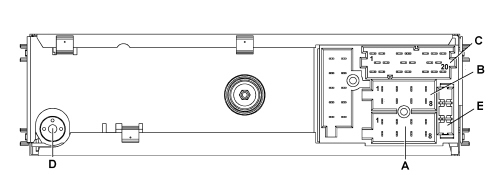
A - Supply connector
B - Speaker output connector
C - Auxiliary functions connector
D - Aerial connection
E - 10 A fuse
Connector pin out
Connector A:
|
Pin |
Function |
|
A1 |
B CAN B |
|
A2 |
BOSE amplifier presence positive signal |
|
A3 |
B CAN A |
|
A4 |
Direct power supply |
|
A5 |
Aerial supply (N.C.) |
|
A6 |
Side lights on lighting (N.C.) |
|
A7 |
N.C. |
|
A8 |
Earth |
Connector B:
|
Pin |
Function |
|
B1 |
Right rear speaker + |
|
B2 |
Right rear speaker - |
|
B3 |
Right front speaker + |
|
B4 |
Right front speaker - |
|
B5 |
Left front speaker + |
|
B6 |
Left front speaker - |
|
B7 |
Left rear speaker + |
|
B8 |
Left rear speaker - |
Connector C/D/E:
|
Pin |
Function |
|
C1 |
Left AUX signal |
|
C2 |
Right AUX signal |
|
C3 |
AUX earth |
|
C4 |
N.C. |
|
C5 |
N.C. |
|
C6 |
Positive signal for amplifier enablement |
|
D7 |
Telephone audio in + (version without Media Player) |
|
D8 |
Telephone audio in - (version without Media Player) |
|
D9 |
Telephone mute (version without Media Player) |
|
D10 |
N.C. |
|
D11 |
N.C. |
|
D12 |
Mute (N.C.) |
|
E13 |
CDC data IN |
|
E14 |
CDC data OUT |
|
E15 |
Permanent power supply for CDC |
|
E16 |
Positive signal for CDC power supply enablement |
|
E17 |
CDC data GND |
|
E18 |
CDC audio GND |
|
E19 |
L input for CDC |
|
E20 |
R input for CDC |
SPEAKERS
Location
The location of the components is illustrated below.
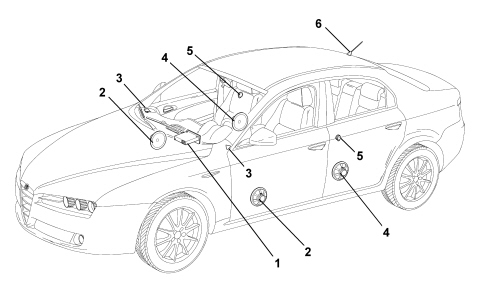
1 - Radio
2 - Front door midwoofer speakers
3 - Tweeter front speakers
4 - Midwoofer rear speakers
5 - Tweeter rear speakers
6 - Aerial
Front tweeter speakers
The tweeter speaker has the function of emphasizing the high tones that are produced through a polycarbonate diaphragm, the copper moving coil support and insulator and the ferrous magnetic assembly.
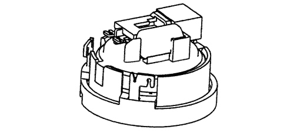
Its electrical specifications are:
- 19 mm diameter
- 12500/20000 Hz band
- resonance frequency 1500 Hz +/- 15%
- nominal impedance 4 OHM
- power RMS 20 W
- max power 30 W
The front tweeters are located in the dashboard.
Rear tweeter speakers
The tweeter speaker has the function of emphasizing the high tones that are produced through a polycarbonate diaphragm, the copper moving coil support and insulator and the ferrous magnetic assembly.
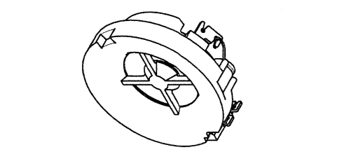
Its electrical specifications are:
- 11 mm diameter
- 12500/20000 Hz band
- resonance frequency 2500 Hz +/- 15%
- nominal impedance 4 OHM
- power RMS 20 W
- max power 30 W
The rear tweeters are located in the top part of the door.
Front mid-woofer speaker
The mid-woofer speaker has the function of emphasizing the low tones produced by a treated paper diaphragm, treated cloth element, treated paper dust cover and aluminium/paper moving coil support.

Its electrical specifications are:
- 160 mm diameter
- 50/8000 Hz band
- resonance frequency 65 Hz +/- 15%
- nominal impedance 4 OHM
- RSM power 20W
- MAX power 40W
The front mid-woofers are fitted in the lower part of the door.
Rear mid-woofer speaker
The mid-woofer speaker has the function of emphasizing the low tones produced by a treated paper diaphragm, treated cloth element, treated paper dust cover and aluminium/paper moving coil support.
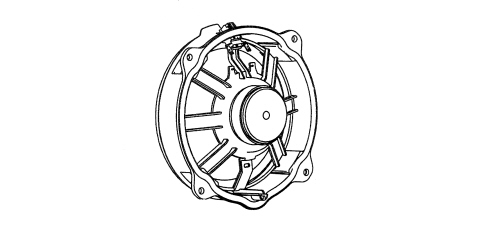
Its electrical specifications are:
- 160 mm diameter
- 50/6300 Hz band
- resonance frequency 70 Hz +/- 15%
- nominal impedance 4 OHM
- RSM power 20W
- MAX power 30W
The rear mid-woofers are fitted in the lower part of the door.
Recommendations for fitting the speakers
In order not to damage the speakers, certain precautions must be taken when fitting and moving them.
The following operations are not advisable:
- Stacking the speakers on top of one another when unpacking.
- Placing the speakers near ferrous metal parts. In the case of very small parts they could get in through the gap and produce noise.
- Twist the terminals once the electrical connection is fitted.
- Rest on the speaker diaphragm during the fitting stages.
- Puncture the speaker diaphragm with a screwdriver whilst fitting.
- Twist the cone (take care, it is one of the most delicate parts).
- Never place the speaker in contact with solvents or derivatives.
The following operations are advisable:
- Always handle the speaker using the plastic structure without twisting the diaphragm and other moving parts.
- Discard speakers that have been subject to impacts and appear to be distorted.
- Remove any protective shields before fitting on the vehicle.
CD Changer
A special Blaupunkt CD Changer cartridge allows up to 10 CDs to be loaded which are then selected through the radio controls. The cartridge only works if it contains at least one CD, the CDs must be correctly inserted and the flap properly shut.
The CD Changer is located in the luggage compartment in the area of the right wheel arch.
It is connected to the radio by means of a specific lead, divided into two sections: one under the dashboard and one under the passenger compartment trim.
Cd changer lead
Connector E (of the radio)
|
PIN |
SIGNAL |
|
13 |
CDC data IN |
|
14 |
CDC data OUT |
|
15 |
Permanent power supply for CDC |
|
16 |
Positive signal for CDC power supply enablement |
|
17 |
CDC data GND |
|
18 |
CDC audio GND |
|
19 |
L input for CDC |
|
20 |
R input for CDC |
"CDC" rapid attachment connector, CD Changer side
|
PIN |
SIGNAL |
|
2 |
Earth |
|
3 |
Permanent power supply |
|
4 |
Switched power supply |
|
6 |
Audio earth |
|
8 |
Left audio IN |
|
10 |
ASCI bus CDC - radio |
|
12 |
Right audio IN |
|
13 |
ASCI bus radio - CDC |
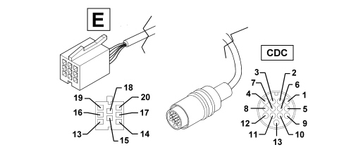
BOSE HIFI AUDIO SYSTEM
Specifications
A sophisticated Bose HIFI system with special HIFI speakers and an outside amplifier is available on request.
The system has been developed ad hoc for the vehicle: the acoustic properties of the passenger compartment have been carefully studied so that the amplifier and the speakers are ideally suited to the vehicle: optimum listening is available in any part of the passenger compartment.
The system is also in perfect harmony with the aesthetics of the vehicle without taking up additional space.
The system is installed directly in the vehicle during production with no subsequent operations: the cables are integrated in the vehicle wiring.
|
|
It is therefore not advisable to make any changes to the original system (e.g. graphic equalizers, additional woofers, extra amplifiers). In addition, the system components (amplifier and speakers) should not be repaired individually, but should be replaced with new components. |
Performance
The Bose system guarantees the highest quality sound with pure treble and rich bass tones with the following specifications:
- Adjusting the volume, through equalization "activates" the Bose system.
- Treble/bass control from + 6 dB to -12 dB.
- Fader control, through the Bose "spatial" fader.
Composition
Unlike the system fitted as standard, the Bose system offers:
- special tweeter and low-mid-range front and rear speakers
- centre rear woofer speaker ( SALOON version) or side bass box (SW)
- mid-range centerfill speaker in the dashboard
- high power amplifier.
The Bose system is completed - only until DEC 05 - by a microphone, located in the front courtesy light, which detects background noise in the passenger compartment: the signal is sent for amplification allowing the optimum adjustment and equalizing of the output levels.
The other components (radio, aerial, etc.) are the same as the standard system.
The location of the components is illustrated below.
Saloon Version
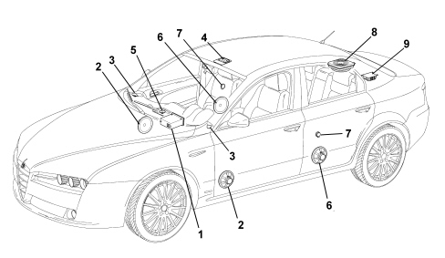
Station Wagon Version
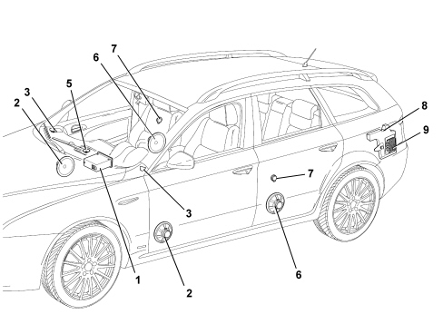
1 - Radio
2 - Front door mid-woofer speakers
3 - Front tweeter speakers
4 - Ambient microphone (until DEC 05)
5 - Centerfill speaker in the dashboard
6 - Rear mid-woofer speakers
7 - Rear tweeter speakers
8 - Rear woofer speaker
9 - Amplifier
Speakers
BOSE hi fidelity speakers are made up of a neodyme magnetic core, with a treated paper diaphragm and a textile mounting. The moving coil support is made of aluminium.
In addition to the four speakers in the standard system (low-mid-range in the front and rear doors with specific tweeters) the Bose Sound System also includes:
Centerfill speaker in the dashboard
This is a high-mide range speaker (80 mm diameter) located in the dashboard, exactly in the centre line of the vehicle, which considerably improves the stereo effect of the sound.
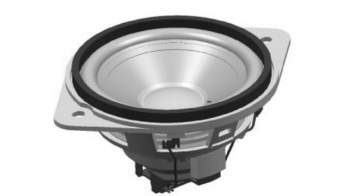
Rear woofer speaker:
It is a high fidelity woofer speaker fitted in the middle of the rear parcel shelf (saloon version) or incorporated in the bass box (SW). It is a 100 W large woofer speaker (1254 mm diameter) supplied by a specific two channel amplifier.
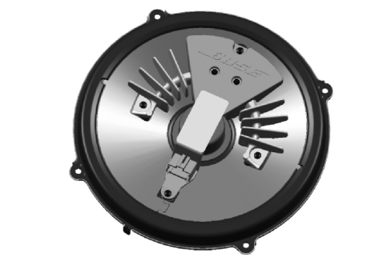
Ambient microphone (until dec 05)
The Bose system is completed by an AMBIENT microphone, located in the front courtesy light, which detects background noise in the passenger compartment; it is a microphone with a low frequency range that detects all typical noises coming from the road and the vehicle.
The signal is sent for amplification allowing the optimum adjustment and equalizing of the output levels.
Amplifier
This is a SERIES 5000 high fidelity amplifer with 6 channels with a total power output of 6x37 W. It is located in the luggage compartment as illustrated.
Saloon Version
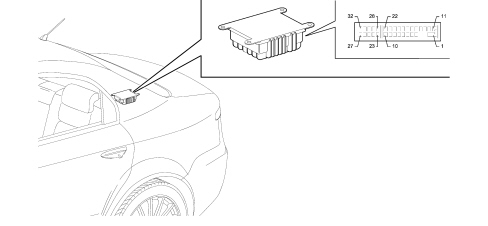
Station Wagon Version
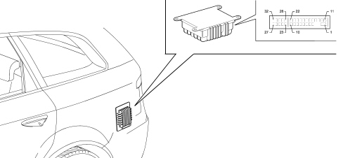
AMPLIFIER CONNECTION PIN OUT
|
PIN |
SIGNAL |
|
1 |
+30 |
|
2 |
earth |
|
3 |
+ centerfill |
|
4 |
left rear speaker - |
|
5 |
right rear speaker + |
|
6 |
enablement (positive signal) from car radio |
|
7 |
left front speaker - |
|
8 |
right front speaker - |
|
9 |
left rear speaker - |
|
10 |
right rear speaker - |
|
11 |
rear woofer + |
|
12 |
rear woofer - |
|
13 |
n.c. |
|
14 |
n.c. |
|
15 |
- centerfill |
|
16 |
left rear speaker + |
|
17 |
right rear speaker - |
|
18 |
n.c. |
|
19 |
left front speaker + |
|
20 |
right front speaker + |
|
21 |
left rear speaker + |
|
22 |
right rear speaker + |
|
23 |
n.c. |
|
24 |
n.c. |
|
25 |
rear woofer power supply |
|
26 |
right front speaker - |
|
27 |
right front speaker + |
|
28 |
n.c. |
|
29 |
+ microphone |
|
30 |
- microphone |
|
31 |
left front speaker + |
|
32 |
left front speaker - |